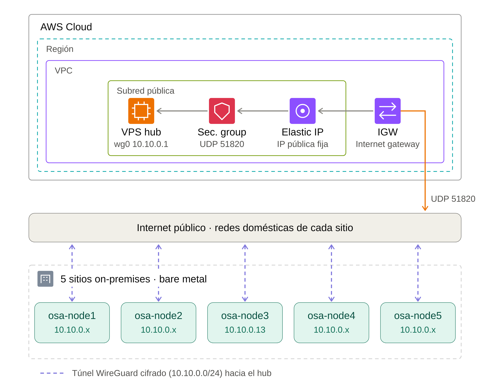
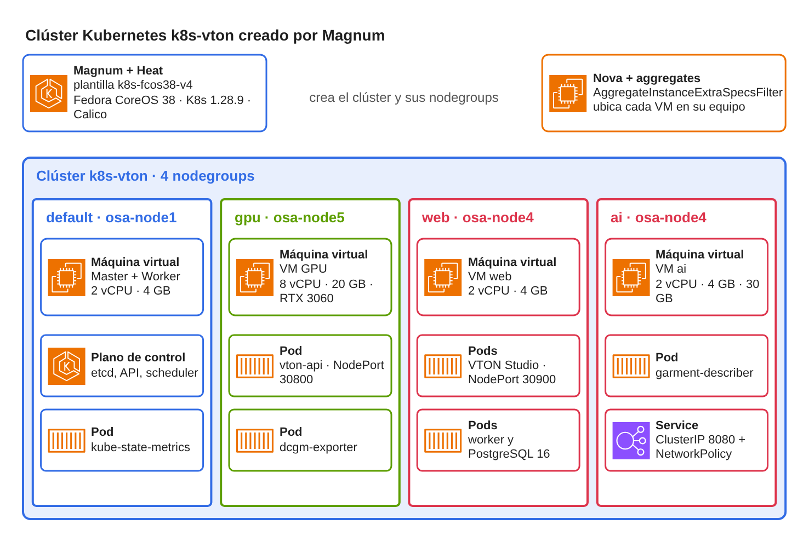
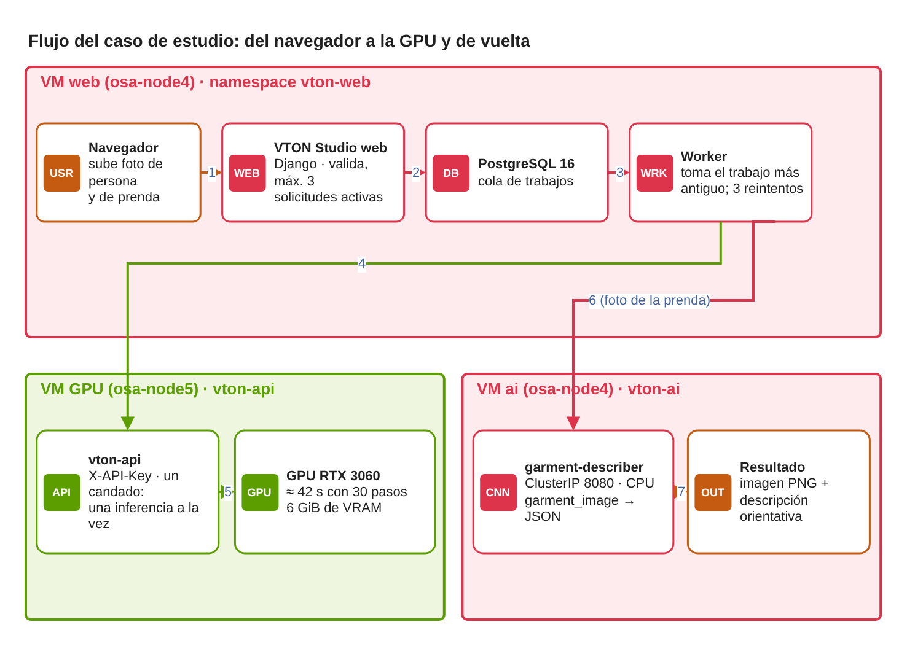
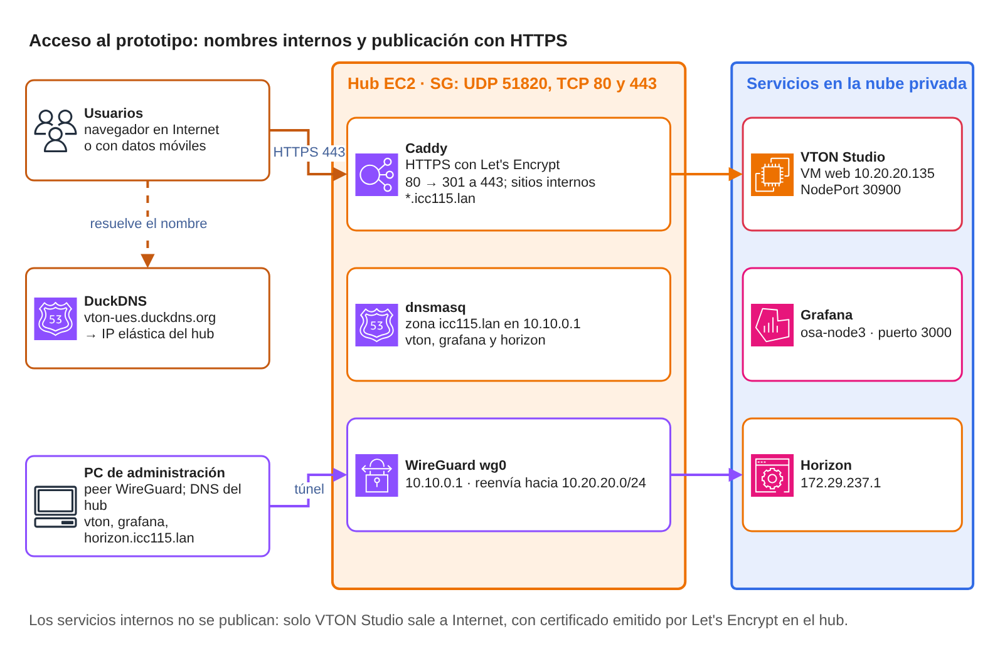

1. Problema
Recursos dispersos y sin administración común


Diseñar y evaluar técnicamente una nube privada basada en OpenStack para ejecutar aplicaciones de IA con aceleración por GPU, con FASHN VTON v1.5 y un clasificador de prendas como casos de estudio, y determinar su viabilidad técnica.
OE1
Identificar requerimientos y capacidades de los equipos
OE2
Diseñar la arquitectura de nube privada con WireGuard
 OE3
OE3
Implementar OpenStack, la conectividad y la asignaciòn de la GPU
 OE4
OE4
Integrar VTON y el descriptor de prendas como casos de estudio
OE5
Evaluar rendimiento, monitoreo y pruebas de carga



Solo los equipos inician la conexión: funciona tras NAT.

Por salto entre sitios; la MTU de la red privada se fijó en 1370 B.

Controlador, almacenamiento, cómputo y un nodo con GPU.

CREATE_COMPLETE y HEALTHY, con cuatro nodegroups.

La RTX 3060 se entrega completa a una VM y desde allí a un pod con el device plugin de NVIDIA.
Nova coloca cada VM en el equipo previsto con host aggregates.


La GPU atiende un trabajo; los demás esperan en la cola de PostgreSQL.

Máximo 3 solicitudes activas por persona; la API exige clave.

El worker consulta al descriptor y la imagen se entrega igual si este falla.

Curación, anotación con IA generativa y estructuración de los datos para MobileNetV3-Small
Prendas procedentes de tres conjuntos de datos.


Se descartan imágenes duplicadas o visualmente similares.
Modelos externos extraen características visuales de las prendas.

Cada imagen se relaciona con sus atributos y etiquetas.
El modelo se entrena fuera de la nube; Kubernetes únicamente ejecuta la inferencia en CPU
Aprendizaje por transferencia y ajuste fino · salidas independientes para tipo, color y estilo.
Se publicaron los pesos y los recursos del dataset; el servicio carga el checkpoint desde un volumen.


Solo VTON Studio sale a Internet, con certificado de Let's Encrypt que se renueva solo.

Zona icc115.lan en el hub; Grafana y Horizon solo se alcanzan por la VPN.
Prometheus y Grafana con 14 targets, incluida la GPU.
Tarifas de lista bajo demanda consultadas en noviembre de 2026; las instancias no son idénticas a la RTX 3060 del equipo propio.

OpenStack, Kubernetes y WireGuard son software libre.
Solo la instancia EC2 del concentrador.

Factible en un escenario controlado; no es un estudio económico integral.

Cinco equipos dispersos se integraron en una nube privada con OpenStack, Kubernetes y una GPU compartida.

VTON v1.5 corre en la GPU de la nube y el descriptor en CPU, con pesos entrenados fuera de ella.

Es un prototipo funcional en escenario controlado, no apto para producción sin TLS interno, alta disponibilidad y respaldos.
Procedimientos, configuraciones y fallas documentados para repetir la construcción.
Sin notas.